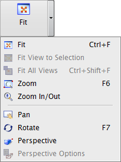
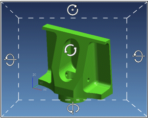

视图命令
有许多不同的方法可以更改部件视图，以便您可以更近地查看部件，或从不同角度查看。
以下命令在视图工具条上视图操作下拉菜单重可以找到。

旋转
使用旋转 命令以从不同角度查看部件，比如当您需要查看一个在当前视图中隐藏的面时。
命令以从不同角度查看部件，比如当您需要查看一个在当前视图中隐藏的面时。
当光标位于屏幕中特定的区域时，有不同的旋转模式可用。尝试在光标位于图形窗口底部、顶部以及两侧时旋转视图，并注意光标的变化。

平移
使用平移 命令来沿任何方向移动视图，而不更改其比例。
命令来沿任何方向移动视图，而不更改其比例。
平移光标 将会取代标准光标。
将会取代标准光标。
放大/缩小
使用缩放命令来查看部件的指定部分。
放大镜 光标表示可以在视图上您想要放大的的任意部分拖出一个矩形。
光标表示可以在视图上您想要放大的的任意部分拖出一个矩形。
适合窗口
使用适合窗口 命令来调整视图的中心和比例，以使视图中的所有对象都显示在屏幕上。
命令来调整视图的中心和比例，以使视图中的所有对象都显示在屏幕上。